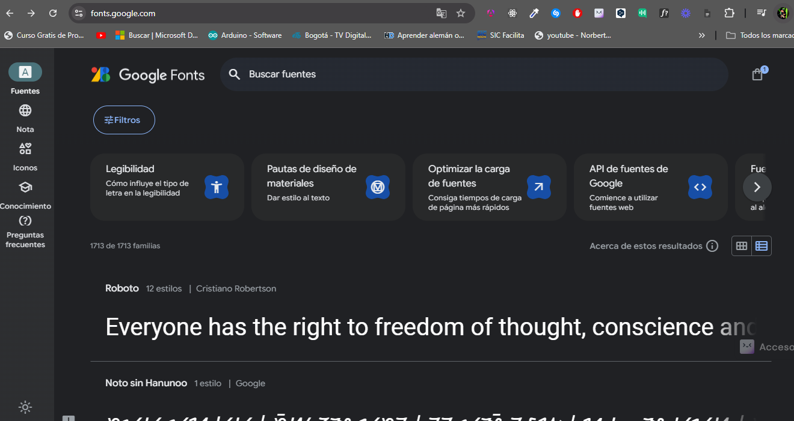
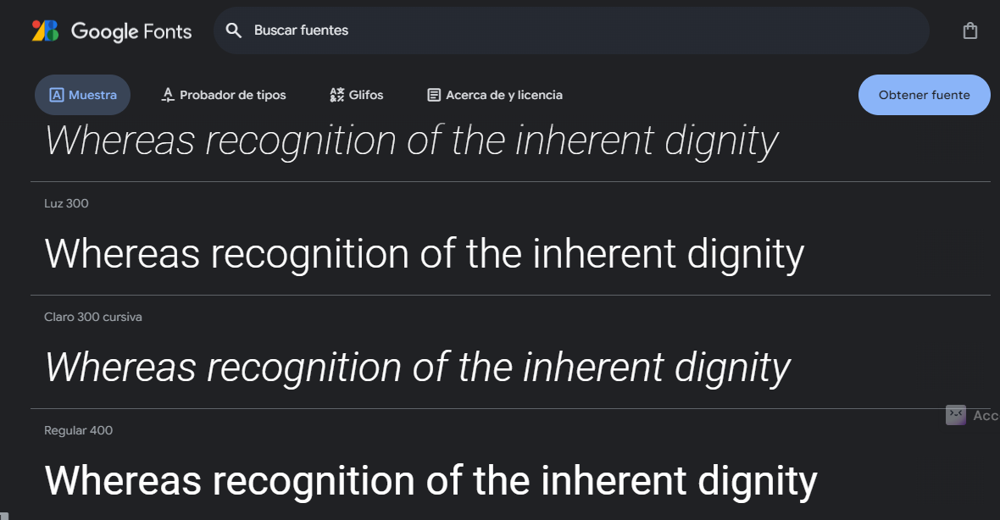
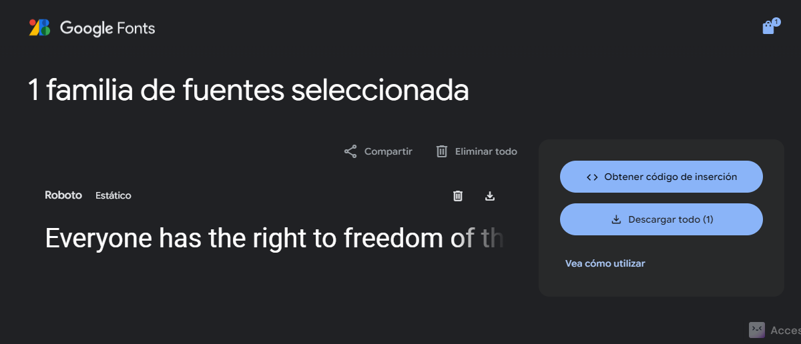
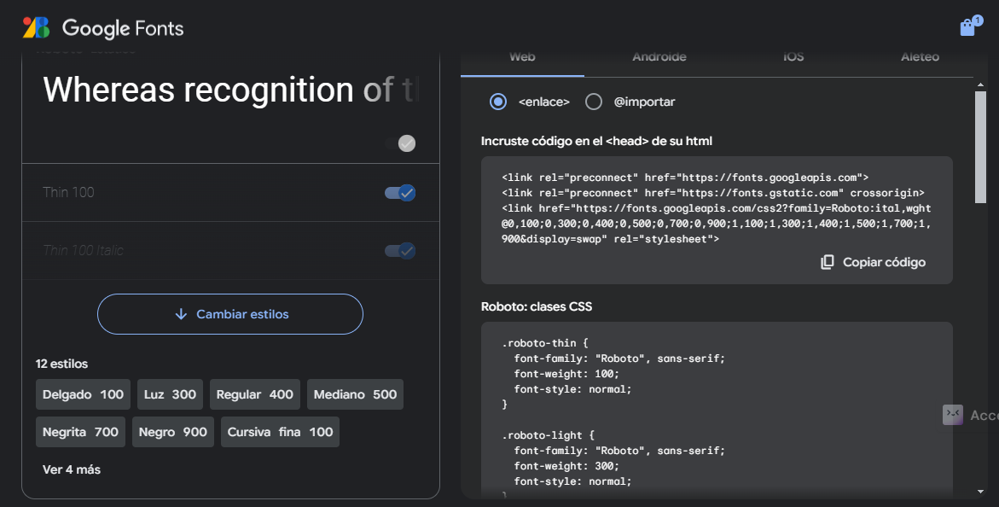

El font size decide el tamaño de la fuente, ya sea en medida relativa o fija
Esta propiedad selecciona el tipo de letra, tambien se pueden exportar letras desde el HTML de lo contrario se debe usar de las que dispone el software usado
Despues de cada coma en el valor de las propiedades se puede agregar otro tipo de letra, esto con el fin de que
si no se encuentra la primera se renderize en el HTML con el siguiente tipo de letra
Tambien puede utilizar medidas relativas o absolutas(fijas) define el tamaño del alto de la fuente

por ejemplo un line height de 1.5 cuando la letra es de 16px, quiere decir que el alto de la fuente seria
16px * 1.5 = 24px
Se encarga del grosor o ancho de las lineas de la fuente, es decir lo hace mas ancha o delgada
Tambien ajusta el ancho de las letras sin variar el tipo de letra, pero tiene valores especificos para cada uno de sus tamaños
normal El valor predeterminado, que selecciona la cara de fuente normal.
ultra-condensed: Selecciona la cara de fuente más condensada disponible.
extra-condensed: Selecciona una cara de fuente más condensada que condensed.
condensed: Selecciona una cara de fuente ligeramente condensada.
semi-condensed: Selecciona una cara de fuente menos condensada que condensed.
semi-expanded: Selecciona una cara de fuente ligeramente más expandida que normal.
expanded: Selecciona una cara de fuente más expandida que semi-expanded.
extra-expanded: Selecciona una cara de fuente más expandida que expanded.
ultra-expanded: Selecciona la cara de fuente más expandida disponible.
small-caps: Se utiliza para convertir el texto en mayúsculas pequeñas,
donde las letras minúsculas se renderizan como versiones en mayúsculas pero con un tamaño menor
Se pueden importar tipos de fuentes externas, entre las posibilidades se puede hacer desde el HTML
mediante una etiqueta link, o desde el CSS empecemos co la etiqueta link
Lo primero es ir a google fonts y elegir la fuente
Seleccionamos, el tamaño
Le damos al boton obtener fuente
Y finalmente el mismo navegador nos da el codigo, para usar el codigo fuente
Es importante tener en cuenta que la etiqueta link se ubica al inicio con los metadatos en el head del HTML
Los CSS se agregan a la clase que queramos como se aprecia en la imagen por ejemplo en este caso el tipo de font ROBOTO
y las clases CSS

Y esta fraccion de codigo se ubica dentro del HTML en la parte en donde se incluyen los metadatos
La implementacion se hace desde el css, llamando font family, y usando esa tipografia, se pueden agregar una o dos mas
tipos de tipografia, para que en caso de que no se encuentre esta se use la siguiente
El uso dentro de la clase de css, es la siguiente:

Asi cambiara el tipo de tipografia de la imagen: